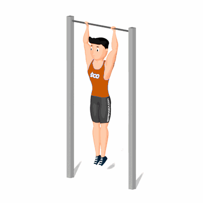

Elevação de Perna com Giro de Tronco

É um exercício de musculação que treina os principais músculos do abdômen, o que inclui o reto do abdômen e os oblíquos interno e externo.
Ficha Técnica
Tipo: Musculação
Grupo Muscular: Abdome
Aparelho: Nenhum
Músculos: Nenhum
Como realizar
- Pendure na barra fixa, com as mãos posicionadas um pouco mais afastadas do que a largura dos ombros e as pernas totalmente estendidas;
- Certifique-se de que seu corpo esteja reto e os joelhos estejam juntos;
- Comece flexionando os quadris e os joelhos, fazendo as pernas subirem;
- Enquanto sobe, gire os joelhos para o lado direito, indo até 90 graus;
- Desça os quadris de forma controlada para retornar à posição inicial;
- Agora repita o movimento, mas girando os joelhos para o lado esquerdo.
 RC STORE
RC STORE